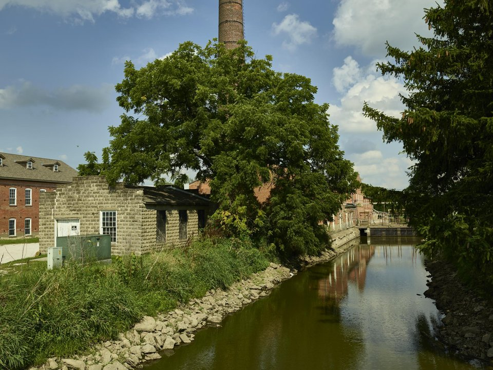

Iowa City · Boutique
Hotel Chauncey
A boutique hotel downtown.
Hilton for Hotel ChaunceyOld-world villages and a literary college town.
The Amana Colonies are seven villages built by German immigrants in the 1850s, now full of craft shops, a working woolen mill, a brewery and family-style restaurants. Pair them with Iowa City, a UNESCO City of Literature with a famous independent bookstore, a lively downtown and the Old Capitol.

Time illustration: direct distance at 150 KTAS plus 15 minutes for departure and arrival, matching the discovery page. Use ForeFlight for your actual flight plan.
KIOW, Iowa City Municipal, is a non-towered field with a 5,000-foot runway, close to downtown and about 25 minutes from Amana.
Iowa City Municipal Airport, Iowa City, IA
Confirm FBO hours, fees and ground transportation. No live fuel price is shown.
Midwest weather: summer thunderstorms and haze, gusty winds on the plains, and icing and low ceilings from late fall through winter. About 760 nm from Myrtle Beach: plan a fuel stop and three nights.
Rates and availability need travel dates. Hawkeye football weekends book early.
A boutique hotel downtown.
Hilton for Hotel ChaunceyInns and B&Bs in the colonies.
Amana Colonies for More places to stayReserve weekend dinners.
German family-style dinners in Amana since 1940.
Official details for Ox Yoke InnOne colony day, one Iowa City day.
This prototype links to the local visitor site. It does not yet match events to your travel dates.
A fall festival in Amana.
Amana Colonies for OktoberfestGame days fill Iowa City.
Christmas markets in the colonies.
Amana Colonies for Holiday seasonCheck the local calendar when choosing a weekend, and confirm dates and tickets with the organizer.
A sample long weekend: villages and a college town. Plan three nights for the flight. No bookings or availability confirmed.
Land at KIOW early.
The Amana villages.
Family-style lunch at the Ox Yoke, then back to the airport.
Land at KIOW, subject to weather, your fuel stop and your actual flight plan.
Walk downtown Iowa City and Prairie Lights.
Dinner in downtown Iowa City.
The Amana villages and woolen mill.
Millstream Brewing.
Family-style dinner at the Ox Yoke.
The Old Capitol.
Allow time at the airport.
Summer thunderstorms build in the afternoon; leave early.
The woolen mill and Millstream Brewing.
Downtown Iowa City and Prairie Lights.
Dinner in downtown Iowa City.
These details make the difference between an appealing list and a usable getaway.
Lodging first.
About 765 nm. Plan a fuel stop and three nights.
Check the Hawkeyes schedule.
May to October; December for holidays.
Picks and links reviewed by WingAway Weekends. Hours, prices, menus and availability change often, so confirm directly with each place before booking. Spotted something out of date, or have a favorite we missed? Email us at hello@wingawayweekends.com.
WingAway Weekends helps you discover the destination. Use ForeFlight and current official aviation information for route, performance, weather, NOTAMs and preflight decisions. Flight planning and PIC responsibility stay with the pilot.